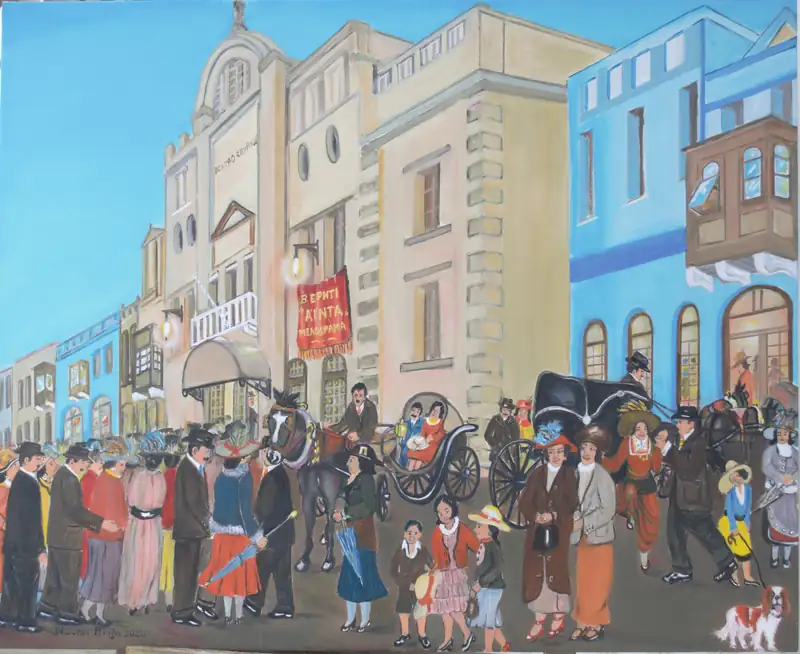
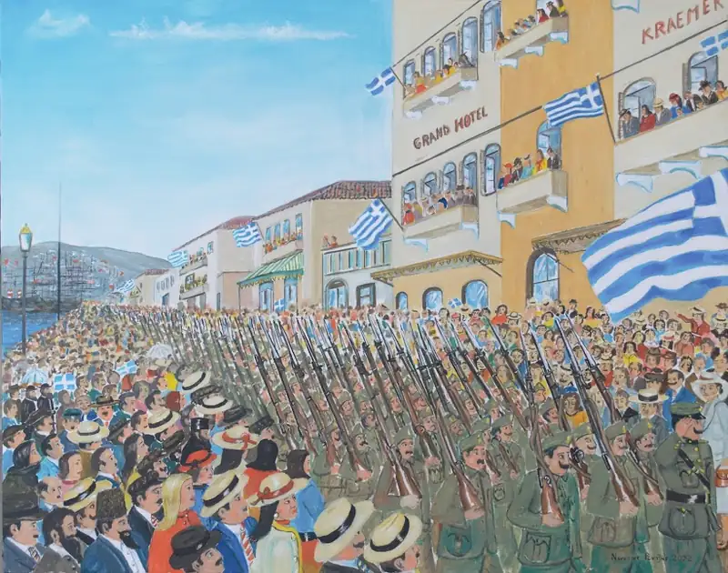
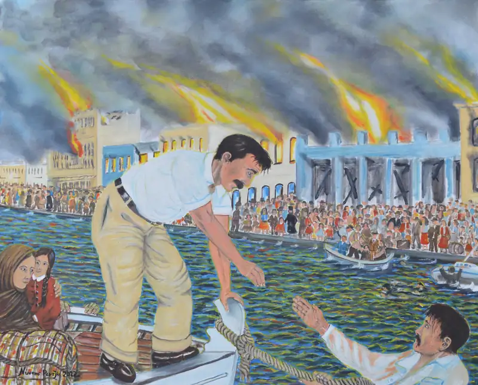
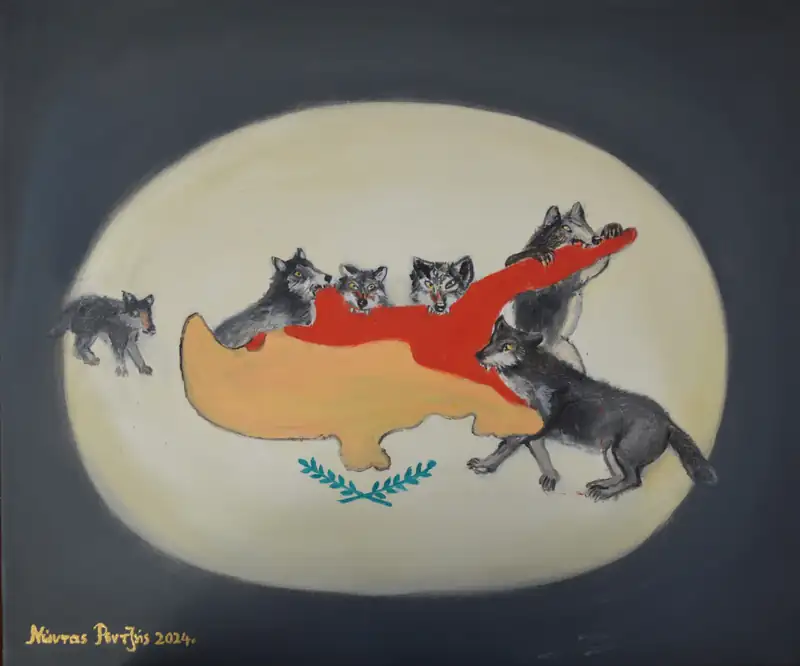

ΕΠΟΣ ΚΑΙ ΤΡΑΓΩΔΙΑ
Σμύρνη αρχές του 20ου αιώνα

Λάδι σε καμβά 80*100 εκ.
Η Σμύρνη, πριν τη μικρασιατική εκστρατεία και καταστροφή της, αποτελούσε ένα από τα σπουδαιότερα λιμάνια της Μεσογείου. Η προνομιακή θέση της, μεταξύ Ανατολής και Δύσης, εξασφάλιζε τεράστια εμπορική κίνηση και ευμάρεια στους 270.000 κατοίκους της εκ των οποίων 140.000 ήταν Έλληνες, 80.000 Τούρκοι, 20.000 Εβραίοι, 15.000 Φραγκολεβαντίνοι και 12.000 Αρμένιοι...
Η εκστρατεία στη Μικρά Ασία

Λάδι σε καμβά 80 x100 εκ
2 Μαΐου 1919: Αποβιβάστηκε στη Σμύρνη μια μεραρχία του ελληνικού στρατού με σκοπό να εγκαταστήσει ελληνική διοίκηση – υπό συμμαχικό έλεγχο - για να προστατέψει όλους τους μη μουσουλμανικούς πληθυσμούς από τις άτακτες τουρκικές δυνάμεις.
Καταστροφή της Σμύρνης

Αύγουστος 1922
Λάδι σε καμβά 80*100 εκ.
Στον αριθμό εκείνων που σκοτώθηκαν κατά τις ημέρες της σφαγής πρέπει να προστεθούν οι Έλληνες που χάθηκαν μετά τον εκτοπισμό τους, οι άνθρωποι που πέθαναν μέσα στις φλόγες ή σκοτώθηκαν από την κατάρρευση τοίχων, εκείνοι που εξέπνευσαν πάνω στην προκυμαία και όλοι εκείνοι που υπέκυψαν έκτοτε από στερήσεις, κακώσεις ή από θλίψη· πρέπει να υπερβαίνουν τις 100.000...
Μπορεί να έσβησε η παρουσία του ελληνισμού στην Ιωνία ... όμως η Ιωνία έμεινε σαν μια ιδέα και οι ιδέες ζουν αιώνια στις καρδιές των ανθρώπων ... δεν χάνονται ποτέ!
«Ω γη της Ιωνίας, σένα αγαπούν ακόμη,
σένα οι ψυχές των ενθυμούνται ακόμη...»
— Κ. Καβάφης
Κύπρος

Λάδι σε καμβά 50*60 εκ.